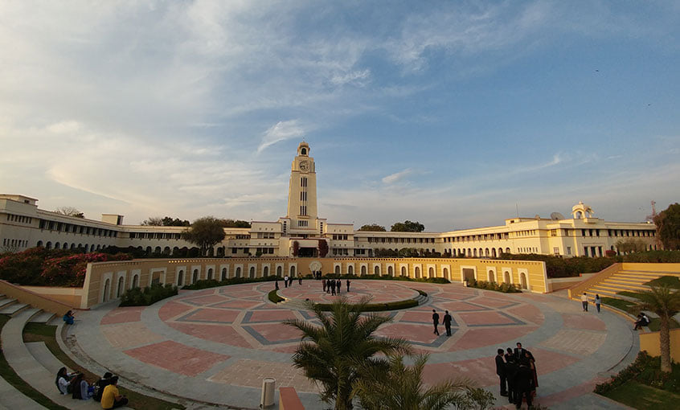
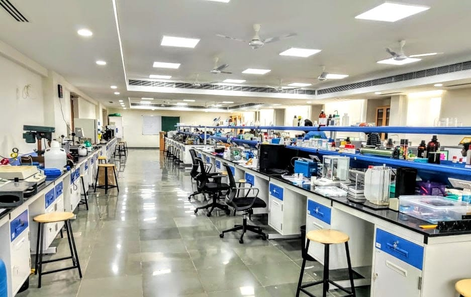
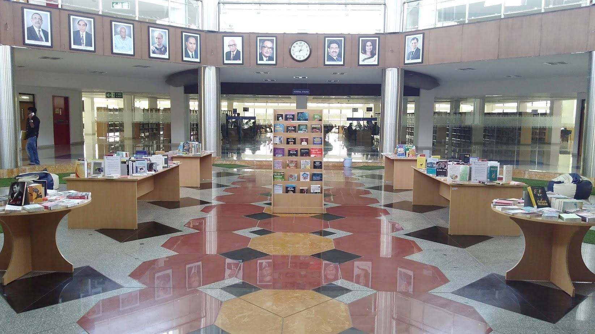

- We’re on your favourite socials!


BITS Pilani Expert's Review and Verdict
Campus at a Glimpse
Did you know that Birla Institute of Technology and Science, Pilani (BITS Pilani) has been able to give 6000 CEOs to the market and 7000 of its alumni are running their startups? This is the maximum number after IIT Delhi and IIT Bombay. Furthermore, engineering aspirants leave their seats at IITs and NITs for BITS Pilani. The premier institute has its campuses at Pilani, Goa, Hyderabad, Mumbai and Dubai. There are many good things about BITS Pilani including its state-of-the-art campus, spread out in 328 acres.
BITS Pilani was recently in the news when it signed an agreement with the Indian Council of World Affairs. Under the terms of the agreement, five students from BITS Pilani will have the chance to undertake internships at the Rajya Sabha, while the institute will also be able to arrange regular visits for additional students as guests to the Rajya Sabha.
Myriad students dream of getting into BITS Pilani to make it big in life. However, not everybody knows everything about it. Thus, for the benefit of such students, we bring an unbiased college verdict with its pros and cons and every minute detail that will help you make an informed decision.
BITS Pilani, a NAAC A-grade institution, is a prominent deemed university under Section 3 of the UGC Act. It offers a wide range of degree programs encompassing Engineering, Sciences, Technology, Pharmacy, Management, and Humanities. BITS Pilani is highly regarded for its rigorous academic programs and is often ranked among the top engineering and technical institutions in India.
The academic institution has a strong emphasis on innovation, research, and entrepreneurship, which makes it a popular choice for students. With an alumni network of 1,72,498 across the globe, BITS Pilani has produced the highest number of CEOs after IIT Bombay and Delhi. The campus is located in the Vidya Vihar, adjacent to the Pilani in Rajasthan state.

BITS Pilani NIRF Ranking: From Good to Better
|
Category |
Ranking 2021 |
Ranking 2022 |
Ranking 2023 |
|
Pharmacy |
- |
5 |
3 |
|
University |
- |
- |
20 |
|
Overall |
29 |
32 |
25 |
|
Engineering |
26 |
29 |
25 |
Looking at its NIRF Ranking, BITS Pilani has fared better in Pharmacy, Engineering and Overall category in 2023 over 2022. Furthermore, it has also ranked 20th in the University category in 2023. In addition to this, the institute has been ranked as the top (Rank 1) Technical Institute in a non-government category by India Today in 2023.
Our Take
The rankings of BITS Pilani in different categories by NIRF is proof of its credibility and academic standards. Thus, the rankings validate its genuineness towards offering quality education. One can, without any doubt, think of BITS Pilani if ranking is a parameter for admissions.
BITS Pilani Academia & Batch Size
BITS Pilani works on the concept of Zero attendance like the Massachusetts Institute of Technology (MIT), USA. Students are not required to take the classes they can prepare at home and pass. Along with this students can choose their subjects and teachers with whom they want to study as per their wish. The BITS Pilani campus has 13 departments at present for Science, Management and Humanities.
Admission to BITS Pilani courses is highly competitive. It is considered to be one of the toughest engineering entrance examinations after JEE Main and JEE Advanced. It’s a computer-based entrance examination - BITSAT (BITS Admission Test) for undergraduate programs. Admissions to postgraduate and doctoral programs are based on different criteria. It is to be noted that the BITSAT exam is based on the NCERT syllabus from the 11th and 12th classes.
For admission to all the Integrated First Degree programmes, candidates should have passed the 12th-grade examination of the 10+2 system from a recognized board or its equivalent. Barring the B.Pharma programmes, candidates should have Physics, Chemistry and Mathematics as compulsory subjects in 10+2 grade.
Note: If any candidate is a board topper, then he/she need not appear in any examination and is eligible for direct admission.
The institute has a three-tier academic structure
- Integrated First Degree (UG)
- Higher Degree (PG)
- Doctoral Programmes
The batch size of various programmes depicts the demand for the course offered by a particular educational institution. BITS Pilani has maintained a decent batch size for its undergraduate as well as postgraduate courses. As per the NIRF data submitted by BITS Pilani for the year 2023, the batch size of the 4 years UG programmes for the year 2022 was 12,297 which was quite higher than the approved intake of 2791. The approved intake for the PG course was 801, while the final enrolled number is 1633. This shows that BITS Pilani has been one of the top choices for students, especially in the BTech discipline.
BITS Pilani Courses Annual Fees
|
Parameters |
Details |
|
Admission Fees |
INR 50,900 |
|
First Semester Fees |
INR 2,31,000 |
|
Second Semester Fees |
INR 2,31,000 |
|
Summer term (if Registered) |
INR 81,000 |
|
Student's Union fee (Annual) |
INR 450 |
|
Student's Aid Fund (Annual) |
INR 225 |
Our Take
The BITSAT exam plays a crucial role in obtaining admission to BITS Pilani since it is one of the most popular and sought-after exams across the country. Hence the number of test takers is high. For around 2000 seats, a total of 3 lakh candidates appear in the exam every year. Furthermore, the test is highly competitive. However, once the institute offers you a seat, you will be able to secure a handsome package during the placements, as the placement records are quite good. The batch size VS approved intake clearly reflects the popularity of the BITS Pilani courses as the gap between the two is quite high. The academic pedagogy is exceptional which makes it a top choice among career-oriented students. The fee charged for the BTech course is also reasonable compared with premium engineering institutes such as MNIT Jaipur.
BITS Pilani Infrastructure
BITS Pilani Research Centre
Research plays an important role in higher education. BITS Pilani actively promotes research among its students and staff. There are various laboratories and equipment available for the students to harness their research skills under the ambit of the BITS Pilani campus. The statistics of the research work mentioned below are the epitome of this.
BITS Pilani Research Details
|
Parameters |
Details |
|
Total Projects |
1720 |
|
Publications |
7000 |
|
PATENTS Filed |
200 |
|
PATENTS Granted |
120 |
|
Total Scholars |
400 |

Library
The BITS Pilani campus has fully stocked libraries with an abundance of books for a book lover. Around 2,30,000 books and manuscripts are placed here. All the libraries are fully AC and during exam time they are open the whole night. The floor area of the library is 65,000 sq. ft. The library has a provision wherein students can issue books on their own. It saves a lot of time for students.

BITS Pilani Hostel
One common saying is popular in BITS Pilani which is “BITSIANS for each other”.
The first-year hostel of the campus is in good condition while for the senior students, the hostel space is not good. Those hostels need overhauling. There are 11 hostels for boys and one big complex for girls. First and second-year students will be accommodated in two or three beds in a single room while third and final-year students will get a single room. There are no restrictions for midnight roaming on the campus.

BITS Pilani Hostel Fees
|
Parameters |
Details |
|
First Semester Fees |
INR 18800 |
|
Second Semester Fees |
INR 18800 |
|
Summer term (if Registered) |
INR 9400 |
Our Take
BITS Pilani has a good infrastructure but there is room for improvement in the hostel facilities. The majority of the students look forward to the hostel renovation while expecting new additions to the dearth of amenities. Therefore, the hostel committee must look into this and ensure a safe and secure stay for the students residing within the campus. The library at BITS Pilani is considered a state-of-the-art facility with a large collection of books and a seating capacity of 8000.
BITS Pilani Student Life: BITS Pilani offers a vibrant campus life with various student clubs, cultural events, and extracurricular activities. It promotes a well-rounded education and personality development.
BITS Pilani: Convocation 2023
BITS Pilani Sports
The BITS Open Sports Meet, commonly referred to as BOSM, is considered as of the country's most extensive student-managed sports tournaments. In these four days, this festival immerses participants in the world of sports. Its primary objective is to offer a stage for colleges across India to display their talents, fostering a spirit of wholesome competition.
Our Take
BITS Pilani is a pro when it comes to sports and cultural activities. The regular visits of eminent personalities like prominent political figures, singers, scientists and business tycoons attract students in huge numbers to interact.
BITS Pilani Internships and Placements
Internship
There are two types of internships offered by BITS Pilani named PS1 and PS2. Most of the BITS Pilani students get a summer internship after 2nd year, which is called Practice School 1 (PS 1) as a part of their curriculum.
The other one is a six-month internship which students get in the final year of their campus and is known as PS2. Under this, one can get internships in top product-based companies like Apple, Amazon CISCO, Paypal, Vmware etc. based on their CGPA. Everyone can get a 6 months internship based on their CGPA alone. The average stipend offered to the students is INR 1,00,000.
Placements
BITS Pilani's 2023 placement season witnessed a total of 109 recruiters offering jobs to students in various domains. The average placement package stood at INR 30.37 LPA whereas the highest placement package was INR 60.75 LPA. Upon analyzing the average package trends for the year 2023, 2022 and 2021 has been INR 30.37 LPA, INR 28.99 LPA and INR 26.29 LPA, respectively. Some of the top recruiters were Accenture, E & Y, KPMG, Google, and IBM. The Career Development Centre (CDC) of BITS collaborates closely with both students and companies to facilitate internship and job prospects. The institute invites multiple companies from sectors like IT, Finance, Banking, Manufacturing etc. The only concern about placement is that students pursuing degrees other than MBA and BTech have access to fewer job opportunities.
Our Take
The placement report of BITS Pilani shows good numbers. The increasing trends in the average salary package clearly depict that the institute is focussing on increasing the job opportunities for the students with a good salary package. Many students, we connected to, feel satisfied about the impeccable placement records of BITS Pilani. BITS has a fabulous placement record with over 95% of students getting placed in different companies every year. The number also speaks about the return on investment (ROI). The only concern is that the institute must come up with placement opportunities for students pursuing courses other than MBA and BTech. It should invite recruiters to participate in the placement process to hire such students.
BITS Pilani Diversity and Demographics
The BITS Pilani campus is rich in diversification. Around 4,500 students live on campus. There are 350 faculty members and a good number of support staff who also live with their families on the campus.
Gender Ratio at BITS Pilani
|
Programme |
Male |
Female |
|
UG |
10554 |
1743 |
|
PG |
1216 |
417 |
BITS Pilani Demographic Representation
|
Programme |
Within State |
Outside State |
Outside Country |
|
UG |
2878 |
8976 |
443 |
|
PG |
148 |
1485 |
0 |
Our Take
Although a large number of students throng to enter BITS Pilani, however, gender imbalance exists. The male-female ratio for the UG programmes is 6:1 and 3:1 for PG programmes. Thus, the institute must plan ways and means to inspire more female admissions. Unlike many institutes, BITS Pilani does not have any special reservations for female candidates. Many premium engineering institutes keep a lower cutoff for admission for female candidates so that there is no gender imbalance and thus BITS Pilani must also adopt this policy to bridge this gap.
Talking about the geographical location of the students studying at BITS Pilani, the number of students from outside the state is quite high compared to the students within the state. The scenario is the same whether it is UG courses or PG courses.
BITS Pilani Location
Spreading over 328 acres and enclosed in a wooden path, the Pilani campus is situated in Vidya Vihar, Rajasthani. Located amidst the bustling natural environment, students enjoy the serene beauty. Pilani is the ancestral hometown of the Birla family who established the institution. Pilani is located approximately 200 km to the west of Delhi and 220 km to the north of Jaipur.
Our Take
Situated in a relatively remote location, students might not access all the amenities and opportunities available in a metropolitan city. But a coin has two sides, the lush green campus cannot be overlooked. Students live in a clean and green environment.
BITS Pilani Scholarships
The institute offers financial assistance to meritorious students and students who are seeking financial help due to their weak economic background. The scholarship is offered on the basis of the performance of BITSAT and the merit of the qualifying exam. The top 1% of performers can avail of 100% of the total tuition fee.
Scholarships Offered at BITS Pilani
|
Type of Scholarship |
Percentage of Students |
Amount |
|
Institute’s own merit award scheme |
Top 1% Students |
100% of total tuition fee |
|
Top 2% Students |
40% of total tuition fee |
|
|
Under the institute’s own merit-cum-need awards scheme |
3% Students |
80% of total tuition fee |
|
6% Students |
40% of total tuition fee |
|
|
12% Students |
25% of total tuition fee |
|
|
6% Students |
15% of total tuition fee |
BITS Pilani Expectation Vs Reality - CLD Verdict
BITS Pilani positions itself as a premier institute based on the data and statistics on different parameters. The USP of the institution is its leadership dedication towards science and technology. The details of the research mentioned in the article above validate these facts. One of the most prominent qualities of this campus is that it nurtures the quality of leadership in its students in a true sense and more than 6000 Global CEOs from this campus proves it.
The name of this deemed university is often compared with other top IITs and NITs, which itself justifies the value of this academic bellwether. But there are some areas wherein the institute needs to focus including fees, hostel facilities, and gender ratio.
|
Yay! |
Nay! |
|
Big and green campus |
Placements of Courses other than BTech and MBA |
|
Pioneer in Technical Education |
Average Hostel Facilities |
|
Annual Fests |
Gender Ratio |
|
NIRF Ranking |
Distance From the Main City |
|
No Attendance Policy |
|
|
Robust Alumni Network |
|
|
Annual Sports |
|
|
Mini-Gym |
|
|
Student Welfare Division |
|
|
Open Air Amphitheatre |
What students says about BITS Pilani
- Many opportunities for internships and placements
- No reservation or special quota
- Clearing BITSAT is required for admission
Note: Insights gathered through various sources across internet like student reviews, ratings, student testimonials etc
BITS Pilani Reviews and Rating
Why to choose BITS Pilani?

4.5
(14 Verified Reviews)
Share your college experience
Earn unlimited cash rewards  Earn up to ₹10 for every approved college review. Refer your friends to write reviews and earn ₹10 for each of their approved reviews too.
Earn up to ₹10 for every approved college review. Refer your friends to write reviews and earn ₹10 for each of their approved reviews too.

Student Feedback and Rating on BITS Pilani
Enrollment : 2020 | Nov 20, 2025
Overall Rating of the University
Overall My overall experience at this college has been truly rewarding. The campus offers a positive learning environment with supportive faculty who are always ready to guide students beyond academics
Placement The placement opportunities at our college are quite impressive and improving every year. The dedicated placement cell works tirelessly to connect students with top companies and provides continuous support through training sessions, mock interviews
Infrastructure The college offers impressive infrastructure that supports both academic and extracurricular growth. Classrooms are spacious, well-ventilated, and equipped with smart boards for interactive learning.
Faculty The faculty at our college truly stands out for their dedication and expertise. Most professors are highly qualified and bring a great mix of academic knowledge and real-world experience into the classroom.
Hostel The hostel provides a comfortable and secure environment for students. Rooms are well-maintained with proper ventilation and regular cleaning. Each room has essential furniture like a bed, study table
Enrollment : 2023 | Oct 29, 2025
A holistic academic experience
Overall At the university, you'll find a perfect blend of learning and personal development. The faculty is not only highly qualified but also friendly and helpful, making sure you really get the hang of your subjects while feeling supported along the way
Placement The university does a great job of bringing in well-known companies from various fields like IT, engineering, management, healthcare, and law, so students from all different areas have a fair shot at landing a job
Infrastructure You know, one of the best things about the university is how its infrastructure really creates a great environment for students. It's designed to help you not only with your studies but also to support your personal growth
Faculty The professors and lecturers at our University really make a big difference in how we experience our time here. They're not only super knowledgeable and well-qualified
Hostel The university's hostel is all about giving students a cozy and secure place to call home, so they can really dive into their studies and enjoy all the fun extracurriculars without any worries.
Enrollment : 2025 | Sep 07, 2025
A holistic academic experience
Overall The university has quickly emerged as a promising institution in higher education. Known for its modern infrastructure and industry-aligned courses, the university offers a diverse range of programs
Placement In terms of placement, the university maintains decent records, especially in IT, management, and core engineering domains, with top recruiters like TCS, Cognizant, and Wipro visiting the campus.
Infrastructure Spread over a sprawling green campus, the university boasts state-of-the-art infrastructure, including smart classrooms, well-equipped laboratories, and an expansive library with digital access to journals and e-books.
Faculty Faculty members are generally qualified and supportive, with many having industry and research experience hands-on learning and skill development, often organizing workshops,
Hostel The hostel is designed to provide a safe, comfortable, and conducive environment for academic and personal growth. There are separate hostels for boys and girls
Enrollment : 2021 | Jul 14, 2025
About my alma mater from where i have done my be
Overall Bits pilani boasts modern amenties,incliding well equipped labs spacious classrooms and a library...it offers a flexible academic system with opportunities for students to choose eletives,pursue dual degress and design their academic paths.
Placement It has an impressive placement record with success rate of 90-95%, the highest international packageis 1.25 crore while domestic offers range from 4-60 lpa.
Infrastructure As i told earlier pilane boasts modern amenities,well equipped labs spacious classarooms and comprehnsive library but i will also tell its negative side like quality of bathing water and presence of stray animals on campus
Faculty The faculty consists of highly experienced and knowledgeable academicians and industry experts. It boasts a strong research and innovation department,fostering a vibrant pool of intellectual talent.
Hostel Bits pilani hostel offers decent living conditions with spacious rooms and basic amenties like a bed table chair and cupboard..washrooms are shared and cleaned regularly. The campus provide 24/7 cold/hot water and good wifi
Enrollment : 2021 | Apr 12, 2024
all it was a nice experience
Overall Overa11 experience was average i Have got some very good friends, . Some teacher who motivated us even Infrastructure was really nice Hostel was also Good
Placement Placements are average Even I can say that it is not up to the mark Because. Number of students are always more than the placements , which comes to college
Infrastructure Interesting to raise this institute.Is average buildings are not very much creatively made?They are good area for sports.Is there area for library is there but little congested
Faculty Faculties are the best part of this institute because they are well qualified with degrees Very well behaved with Students and also motivate students in each and every step of their life in college
Hostel Hostile facility is average in nature.It is congested because of the number of students are more than the number of rooms.Available label food quality is really nice.And hygiene is maintained here
Enrollment : 2024 | Mar 23, 2024
A Brief About Bits Pilani
Overall I was studying in Bits Pilani. It has zero percent attendance policy and also students can do self study by preparing thier own time table which is very helpful for increasing their productivity.
Placement In past few years bits pilani provided a great value pakages to many of the alumis.I also have the package with 25 lpa in a well known company in bengluru.
Infrastructure The institute has very large campus with a large Building, a play ground, a canteen and hostels. The campus is full with greenery and has peaceful climate.
Faculty The faculty of BITS Pilani is really good .The teachers are very aged andexperienced .They can help you at any moment of time like whenever you call then they are ready to help. Which makes the environmentof the campus more productive.
Hostel There are six boys hostels and two girls hostel. Hostel service are nice. Rooms are given with one bed ,chair and table,a cuboard,and a shelf.2 students per room are allotted.
Enrollment : 2024 | Mar 20, 2024
Unimaginable life at bits..
Overall The life over here is really very good we have many entries over here functioning till 2 am and we have many departments and clubs over here too that helps in overall development. Seniors here are also very helpful and you will surely enjoy your life over here..
Placement Placements over here are also very impressive with an average of 20 lakh per annum. There are many big companies that come here for recruitment including bcg, tata consultancy, Microsoft and many others..
Infrastructure Infrastructure here is very good,we have a very big library,big lecture halls and we too have a all sports ground that include almost all sports and we have the great clock tower that is the pride of bits..
Faculty Faculties over here are very highly qualified and very supportive too that helps us to learn better. They are very friendly in nature and we almost have regular exams over here that helps us to interact with them better.
Hostel Hostels over here are also very good we have separate hostel for both boys and girls. We have sharing room in 1 and 2 year and we have single room from 3 year onwards.We have one fans in our rooms and a study table and a bed.
Enrollment : 2024 | Feb 28, 2024
One of the better colleges for engineering
Overall It is a tier 1 college, obviously one of the best in the country for pursuing engineering and sciences. The placements are better than offered by most engineering colleges, which is crucial given the current job market. Student life is also full of fun and never dull. Strict policies against bullying and sexual harassment are also implemented. The campus feels safe and also begins to feel like home in the years spent here. The food, although could never beat that consumed at home, is actually edible and good, contrary to most food served in hostels nationwide.
Placement Obviously, BITS Pilani as a tier one college has great placements, but a degree from the same is also helpful after the first placements. The average for CSE graduates the previous year was around 30 lpa (ctc). What makes the college stand out is its PS1 (Practice School) (internship without stipend after first year) and PS2 (internship with stipend in fourth year) along with great opportunities for SI (summer internship)
Infrastructure The latest addition to the campus, the new acad block comprises modern infrastructure as well as fully air conditioned classrooms and labs. There are also attractions such as a life size chess courtyard, rock gardens in the acad block, and the new football ground, swimming pool, sac (student activity centre), basketball and tennis courts, and more. The campus is also surrounded by and full of greenery and flowers. There are also facilities for grocery shopping, fresh vegetables and fruits shopping, laundry, on campus restaurants, stationary, and salons in cp (cannought place).
Faculty The professors are extremely helpful and very reachable, with each having allotted chamber hours made known to the students. It is also very easy to contact them via the university email. They are all very learned. In second year, you can also apply to become TA (teacher's assistant) for a course of choice that you scored well in in first year.
Hostel The hostel rooms are clean. Each room consists of a fan, two cots, two sets of desk with chair, two almirahs, and place for storage in the walls. The first and second years are to share their room with one roommate, and from third year on, single rooms are provided. There are in total 9 boys' hostels and 3 gurls' hostels.
Enrollment : 2020 | Feb 18, 2024
Overall sports experience
Overall I myself plays badminton and i find the sports environment quite useful. Almost every sports is available to play ranging from badminton ,cricket,football,hockey,tennis,basketball,squash. Die to students coming from all over India, we perform really good in sports meets.Sports fields are maintained properly.
Placement Since it is teir 1 college ,placements are really good comparing to other college, Even In low branch as civil engg, avg package is 12 lpa to as high as 20 LPA in computer and electrical engg. U dont have to worry about placements as top companies of the world come to select the students
Infrastructure I myself is pursuing civil enggg.So i can tell infrastructure is really good and upto the mark.well maintained floors and clean campus provide the children with a healthy atmosphere. There are trees everywhere making it really worth it.
Faculty Faculty is really good here, most of them coming from IITs and NITs with an exceptional experience in their field. Most of the faculties are really friendly,and is always available to clear your doubts.Their teaching style is also unique and captivating.
Hostel There are very few college whose hostels are really good. Our campus is one among them.Well maintained washroom to clean corridors really make it worth the experience. We have single occupancy and double occupancy rooms in the hostels.Rooms are spacious for an individual and environment is really friendly.
Enrollment : 2023 | Feb 14, 2024
Something about bits pilani (Real review by student)
Overall The college is fantastic .in this college no dress and no attendance rule that is very good .students are very talented(you can compare them with iitian).most of the students are doing their study by self and study for exam before 1 month of exam that's the main reason of success .because students are very talented .Most of the companies are open for all but if you are from circuital branch then you can sit for approx all companies placement but cgpa is also considered
Top Courses at BITS Pilani
Related Questions
Dear Student,
There are several options to choose from when it comes to SNAP coaching institutes. It is a good idea to go for an established institute like IMS, PT Education, TIME, Prudence Academy, Erudite, Endeavour Careers, Career Launcher, Byju’s Classes, Bulls Eye, MBA guru, etc. All these coaching institutes will not only help you develop a good foundation for Mathematics, but also enhance your overall knowledge and skill level. IMS ANS C2C coaching is an excellent choice if you are preparing for SNAP 2025, as they provide different pathways and methods for preparation.
Hi student,
The BITSAT qualifying marks tend to vary based on different courses and campuses. Talking about some of the most popular courses, the expected BITSAT passing marks for BE Civil range from 237 to 239 marks (Pilani), 234 to 236 marks (Hyderabad), 237 to 239 marks (Goa); for the course of BE Electrical & Electronics, the BITSAT 2025 cutoff range from 291 to 293 marks (Pilani), 274 to 276 marks (Hyderabad), 291 to 293 marks (Goa) etc. Note that this data has been estimated keeping in mind the previous year trends. The official data might vary based on several factors such as the seat availability, exam difficulty, total number of exam takers, etc.
We hope this answer clears your query.
In case of further queries, you can write to hello@collegedekho.com or call our toll free number 18005729877, or simply fill out our Common Application Form on the website.
Hi student,
BITSAT exam mein 180 ek bahut acha rank maani jaati hai aur is rank se aapko BITS Pilani mein admission milne ki bahut achi sambhavana hai. Yehi nahi, is rank se aap bahut popular courses jaise kki B.Pharma vagerah mein asaani se admission le sakte hai. Please note ki ye data purane cutoff trends se extract kiya hua hai aur ye bahut saare factors jaise ki current competition, exam difficulty, seat availability, BITSAT 2025 cutoff, etc pe vary kar sakta hai. Baaki details se updated rehne ke liye hum advise karenge ki aap humare BITSAT 2025 exam page pe time to time visit karte rahiye.
We hope this answer clears your query.
If you have further queries regarding admission to top private engineering colleges in India, you can write to hello@collegedekho.com or call our toll free number 18005729877, or simply fill out our Common Application Form on the website.
Dear Student,
When you are making your portfolio for BITS Design School (BITSDES), keep in mind that although the school does not offer sample portfolios, it does give a lot of direction to enable you to make your own. The most important thing is to concentrate on demonstrating a combination of project diversity, depth, and solid technical skills. To assist you in this regard, BITSDES has posted an effective YouTube video on "How to Make a Portfolio for BITS Design School" from which you'll get tips and suggestions for communicating your skills and creativity successfully.
Apart from the official advice, you may also learn valuable insights from online forums where previous applicants post their experiences. For instance, one applicant submitted product designs, pencil drawings, and computer artwork as part of their portfolio. Although these instances may provide you with valuable insights, keep in mind that they are individual experiences and not official advice from the school.
To get a wider perspective, you can also look at general resources on building design portfolios. There are many websites that provide articles and advice on making instructional design portfolios, which, although not BITSDES-specific, can still give useful tips and ideas for your portfolio creation.